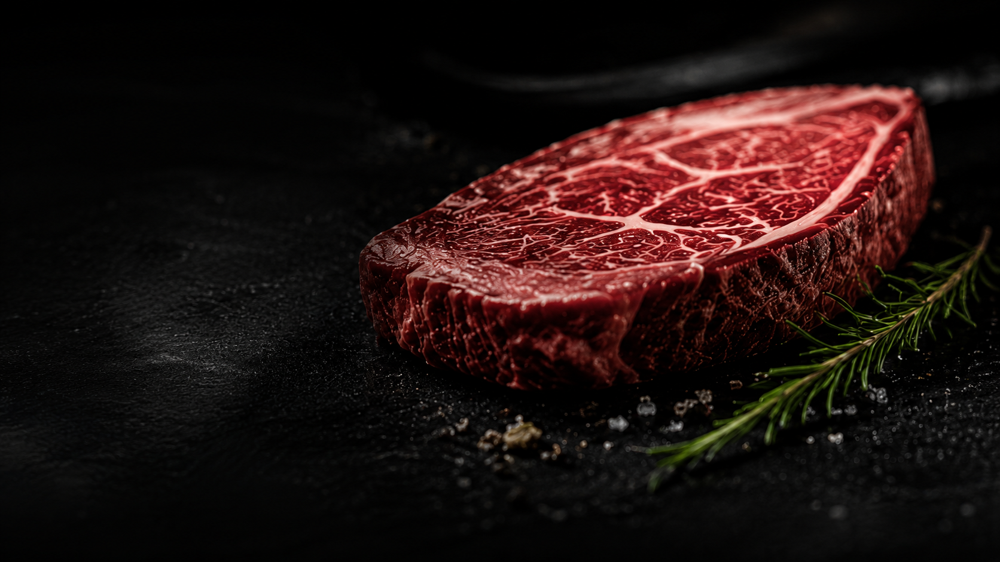
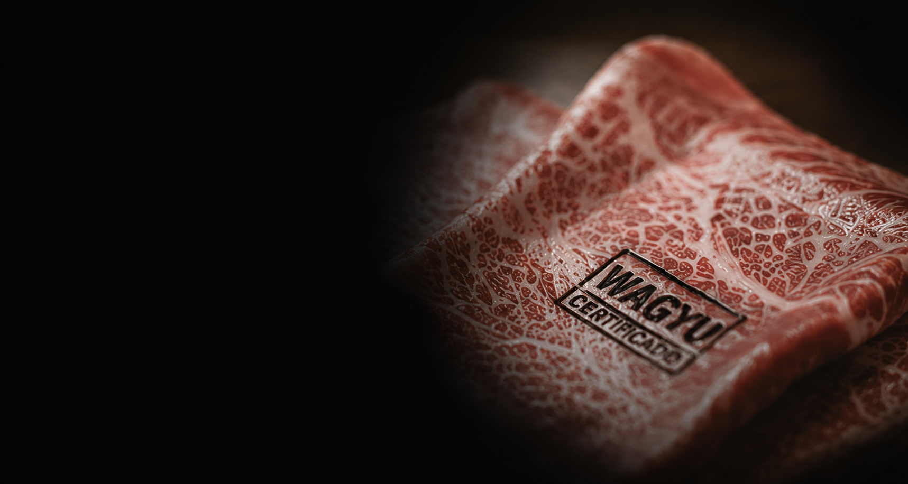
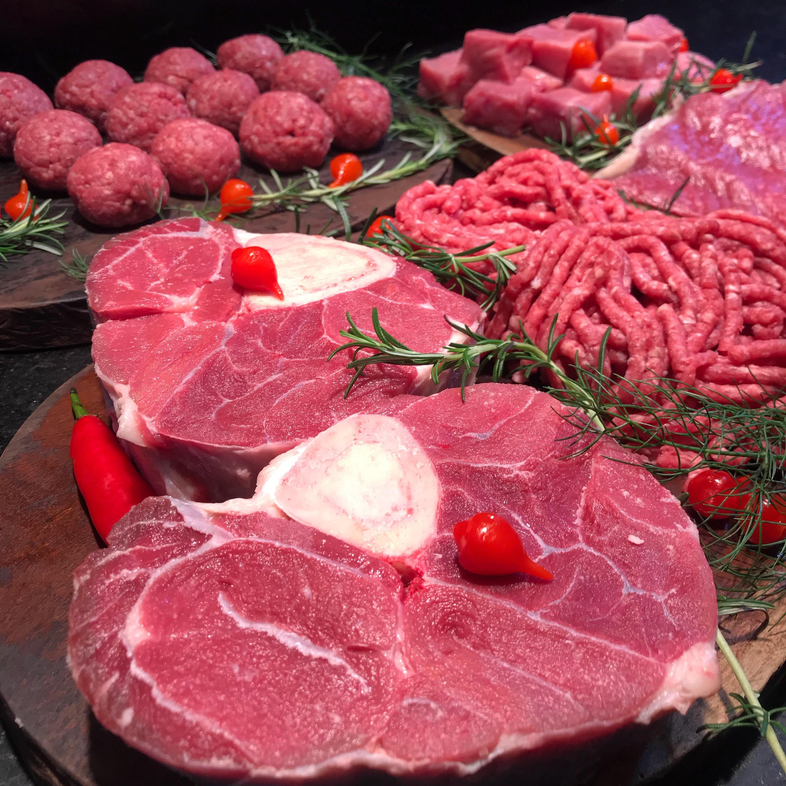
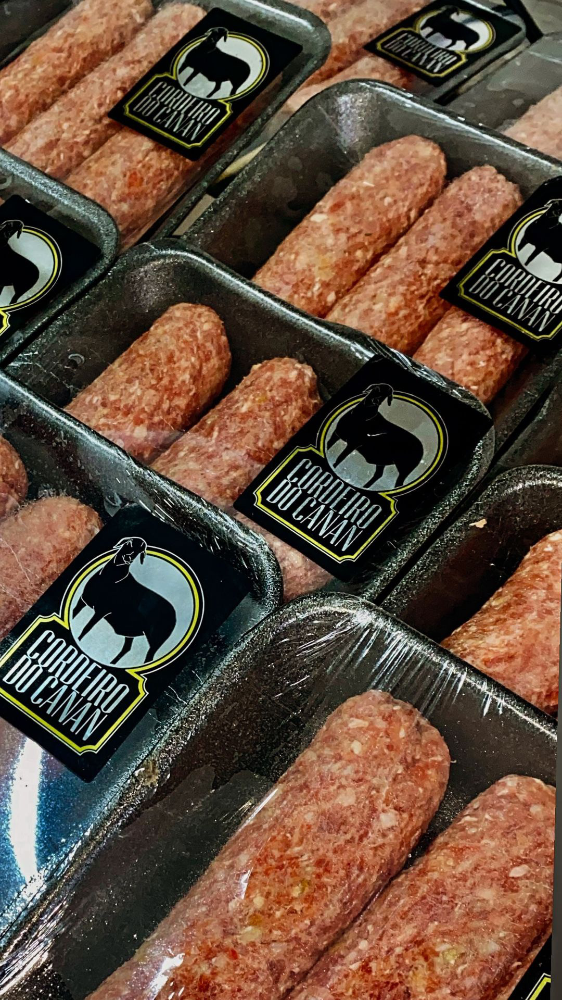

WAGYU
O corte mais nobre do mundo na sua mesa.
DRY AGED
A arte da maturação a seco no padrão Bull Prime
EVENTOS
Transforme o seu evento em uma verdadeira experiência.
EXPERIÊNCIAS
Brasa, técnica e pratos inesquecíveis.
Diferenciais Bullprime
QUALIDADE PREMIUM
Cortes selecionados com rigor absoluto das melhores raças do mundo, garantindo um padrão inigualável de excelência.
WAGYU CERTIFICADO
Marmoreio excepcional, textura amanteigada e sabor incomparável.
DRY AGED EXCLUSIVO
Maturação a seco meticulosamente controlada para máxima maciez e sabor intenso.
EVENTOS & CURSOS
Experiências gastronômicas imersivas e corporativas estruturadas para os verdadeiros apreciadores da carne.
Linhas Premium
Da linha dia a dia, até o corte mais exclusivo, cada linha carrega o mesmo compromisso: qualidade sem concessão. Escolha a sua e descubra por que a Bull Prime é referência em carnes nobres.



